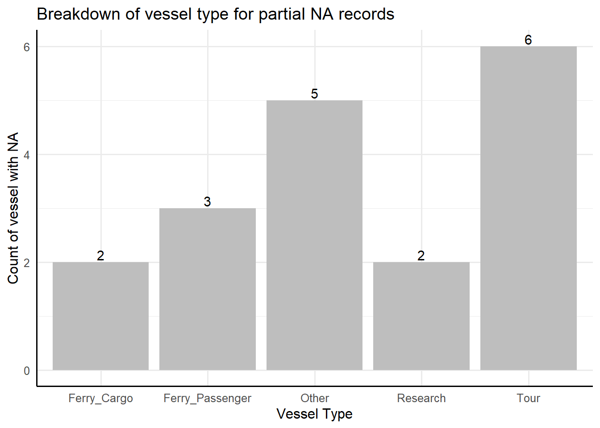
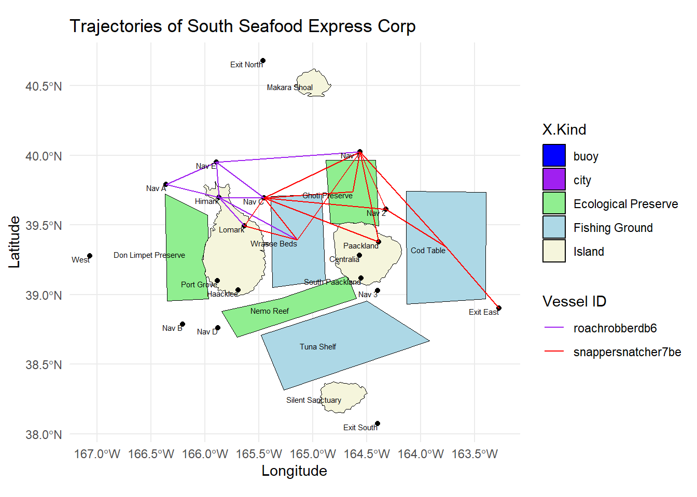
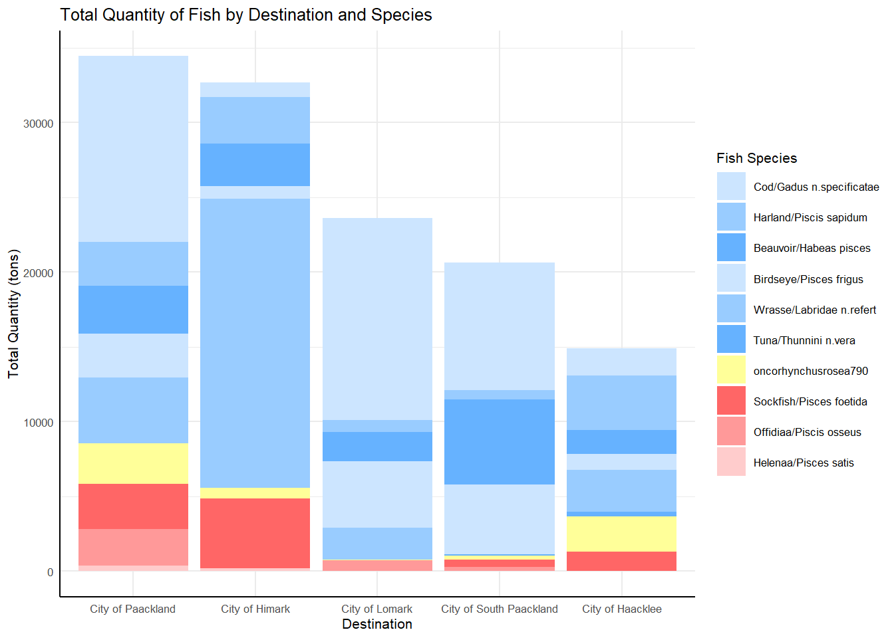

FishEye has learned that SouthSeafood Express Corp has been caught fishing illegally. The scandal caused a major disruption in the close-knit fishing community. FishEye has been collecting data on ship movements and shipping records in hopes that they could assemble a cohesive store of knowledge that will allow them to better understand local commercial fishing behavior.
1.2 Key Objectives of this assignment:
FishEye analysts need help to perform geographic and temporal analysis of the CatchNet data so they can prevent illegal fishing from happening again. This assignment will focus on sub-questions 1 & 4, namely:
Sub-qn
Objectives
Techniques used
1
Visualization system to associate vessels with their probable cargos, including seasonality analysis to detect any anomalies in port exit records.
4
Visualizing changes in fishing activities after SouthSeafood Express was caught.
Temporal Analysis
2. Data Import & Processing
2.1 Loading relevant packages and data
Packages Used
Purpose
jsonlite, sf
Importing JSON file and geojson for geographical data
2.2.1 Extracting edges & understanding edge tibble data table.
Extracting JSON file edges to tibble data frame and removing duplicates
Converting to the correct data types for datetime
Renaming columns starting with “_ xx_” to minimize downstream syntax errors.
Creating subsets of data tables based on column of “type”
Renaming of columns to provide context and unique identifiers for downstream data mapping.
Specifically for tx_c, adjustment of transaction date, T0 to T-1 as fish import generally leave harbor one day after delivery
Resultant data sets include:
Resultant Edges Data Set
Unique columns
Transactions (i.e., tx_c)
Cargo_id, Destination, Transaction date, Fish species
Transponder Ping (i.e., E_Tping_c)
Start_time, Dwell, Ping source, Vessel_id
Habor Arrival Report (E_Hbrpt_c)
Vessel_id, Port, Key, Arrival date, Port master, Aphorism, Holiday Greeting, Saying of the Sea, Wisdom
Code
#assigning to mc2_edges2mc2_edges <-as_tibble(mc2_data$links) %>%distinct() #correcting data type - converting to date formatmc2_edges$time <-as_datetime(mc2_edges$time)mc2_edges$"_last_edited_date"<-as_datetime(mc2_edges$"_last_edited_date")mc2_edges$"_date_added"<-as_datetime(mc2_edges$"_date_added")mc2_edges$date <-as_datetime(mc2_edges$date)#renaming headers with "_" to prevent errors. mc2_edges <- mc2_edges %>%rename("last_edited_by"="_last_edited_by","date_added"="_date_added","last_edited_date"="_last_edited_date","raw_source"="_raw_source","algorithm"="_algorithm") #checking data format#glimpse(mc2_edges)# Breaking into subsets based on event categoryE_TransponderPing <-subset(mc2_edges, mc2_edges$type =="Event.TransportEvent.TransponderPing")E_HarborRpt <-subset(mc2_edges, mc2_edges$type =="Event.HarborReport")E_Tx <-subset(mc2_edges, mc2_edges$type =="Event.Transaction")# Dropping columns that are NULL and renaming variables to separate them# TransactionsE_Tx_c <- E_Tx %>%rename(cargo_id = source, dest = target,tx_date = date) %>%mutate(tx_date = tx_date -1) %>%# adjustment for recordsselect(-c(key, algorithm, `raw_source`, `type`, `data_author`, `aphorism`, `holiday_greeting`, `wisdom`, `saying of the sea`, `time`, `dwell`)) # Separating the fish species for the respective cargo tx_sub1 <- E_Tx_c[grep("^City of", E_Tx_c$dest), ]tx_sub2 <- E_Tx_c[!grepl("^City of", E_Tx_c$dest), ]tx_sub2 <- tx_sub2 %>%rename(fish_species = dest)tx_c <-left_join(tx_sub1, tx_sub2 %>%select(cargo_id, fish_species), by ="cargo_id")# Dropping raw source: All Oceanus Centralized Export/Import Archive and Notatification Service (OCEANS)# Dropping algorithm: CatchMate ('arrrr' edition)# Null columns - Data author, aphorism, holiday_greeting, wisdom, saying of the sea, time, dwell# Transponder PingE_Tping_c <- E_TransponderPing %>%rename(vessel_id = target, ping_source = source,start_time = time) %>%select(-c(key, `algorithm`, `raw_source`, `type`, `date`, `data_author`, `aphorism`, `holiday_greeting`, `wisdom`, `saying of the sea`)) #Dropping raw_source: All Oceanus Vessel Locator System#Dropping algorithm: All OVLS-Catch&Hook# Null columns - Date, Data author, aphorism, holiday_greeting, wisdom, saying of the sea# Habour ReportE_Hbrpt_c <- E_HarborRpt %>%rename(vessel_id = source, port = target, arr_date = date, port_master = data_author, saying =`saying of the sea`) %>%select(-c(`algorithm`, `type`, `time`, `dwell`)) #Dropping algorithm: All HarborReportMaster 3.11#Retain raw_source: Differing values depending on which Port / Cityrm(tx_sub1, tx_sub2, E_TransponderPing, E_HarborRpt, E_Tx, mc2_edges, E_Tx_c)
2.2.2 Extracting nodes & understanding nodes tibble data table.
Repeating similar steps for nodes records, we obtained the following resultant data set. To minimize the number of data sets, we appended nodes information on vessels and region into a combined data set, with an assigned label to identify it’s category. (e.g., vessel_type)
Resultant Nodes Data Sets
Unique Columns
N_fish (Fishes and their description)
Fish_id, fish species
N_Delivery_Doc (Cargo and details)
Cargo_id, quantity in tons, delivery date
N_vessel (Vessels and their description)
Vessel_id, vessel name, vessel company, flag country, tonnage, overall length, vessel type
Location_legend (Point, City, Region)
Area, activities, kind, fish_species
Code
#segmenting nodes data and checking for distinct recordsmc2_nodes <-as_tibble(mc2_data$nodes) %>%distinct()#renaming to remove the "_" mc2_nodes <- mc2_nodes %>%rename("last_edited_by"="_last_edited_by","date_added"="_date_added","last_edited_date"="_last_edited_date","raw_source"="_raw_source","algorithm"="_algorithm") #tidying the text data to remove nested list.mc2_nodes_tidied <- mc2_nodes %>%mutate(Activities =gsub("c[(]", "", Activities)) %>%mutate(Activities =gsub("\"", "", Activities)) %>%mutate(Activities =gsub("[)]", "", Activities)) mc2_nodes_tidied <- mc2_nodes_tidied %>%mutate(fish_species_present =gsub("c[(]", "", fish_species_present)) %>%mutate(fish_species_present =gsub("\"", "", fish_species_present)) %>%mutate(fish_species_present =gsub("[)]", "", fish_species_present)) # Creating subset on nodes informationN_fish <-subset(mc2_nodes_tidied, mc2_nodes_tidied$type =="Entity.Commodity.Fish") %>%select_if(~!any(is.na(.))) %>%select(-c(`type`, `raw_source`, `algorithm`, `Activities`, `fish_species_present`)) %>%rename(fish_species = name, fish_id = id)NL_City <-subset(mc2_nodes_tidied, mc2_nodes_tidied$type =="Entity.Location.City") %>%select_if(~!any(is.na(.))) %>%select(-c(`raw_source`, `algorithm`, `type`, `fish_species_present`)) %>%rename(city_name = Name, city_id = id)NL_Point <-subset(mc2_nodes_tidied, mc2_nodes_tidied$type =="Entity.Location.Point") %>%select_if(~!any(is.na(.))) %>%select(-c(`raw_source`, `algorithm`, `kind`, `fish_species_present`)) %>%rename(point_name = Name, point_id = id)## Need to tidy NL RegionNL_Region <-subset(mc2_nodes_tidied, mc2_nodes_tidied$type =="Entity.Location.Region") %>%select_if(~!any(is.na(.))) %>%select(-c(`raw_source`, `algorithm`, `type`, `Description`)) %>%rename(region_name = Name, region_id = id, region_kind = kind)N_Delivery_doc <-subset(mc2_nodes_tidied, mc2_nodes_tidied$type =="Entity.Document.DeliveryReport") %>%select_if(~!any(is.na(.))) %>%rename(deliver_date = date,cargo_id = id) %>%select(-c(`algorithm`, `type`, `raw_source`, `Activities`, `fish_species_present`)) ## consider adding back more columns, it dropped some columns where values were partial NAN_vessel <- mc2_nodes_tidied %>%filter(grepl("Entity.Vessel", type)) %>%mutate(vessel_type =case_when(grepl("FishingVessel", type, ignore.case =TRUE) ~"Fishing",grepl("Ferry.Passenger", type, ignore.case =TRUE) ~"Ferry_Passenger",grepl("Ferry.Cargo", type, ignore.case =TRUE) ~"Ferry_Cargo",grepl("Research", type, ignore.case =TRUE) ~"Research", grepl("Other", type, ignore.case =TRUE) ~"Other", grepl("Tour", type, ignore.case =TRUE) ~"Tour", grepl("CargoVessel", type, ignore.case =TRUE) ~"Cargo_Vessel" )) %>%mutate(company =ifelse(is.na(company), "Unknown", company)) %>%# Handle NA values by replacing NA with unknownselect(-c(`algorithm`, `type`, `raw_source`, `Activities`, `fish_species_present`, `Description`, `kind`, `style`, `name`, `qty_tons`,`date`)) %>%rename(vessel_id = id, vessel_name = Name, vessel_company = company)# Further exploring records where there is null valuespartial_na_records <- N_vessel[!complete.cases(N_vessel), ] %>%select(-c(last_edited_by, date_added, last_edited_date)) partial_na_sum <- partial_na_records %>%group_by(vessel_type) %>%summarize(count =n()) # Plot NA recordspartial_na_plot <-ggplot(partial_na_sum, aes(x = vessel_type, y = count)) +geom_bar(stat ="identity", fill ="grey") +geom_text(aes(label = count), vjust =-0.2, size =4) +labs(title ="Breakdown of vessel type for partial NA records", x ="Vessel Type",y ="Count of vessel with NA") +theme_minimal(base_size =12) +theme(axis.line =element_line(color ="black"))partial_na_plot

Code
# Display partial na recordsdatatable(partial_na_records, options =list(pageLength =5))
Code
# merging ping with location details (region_id, city_id, point_id)## See how to deal with list within activites, and how to include region_kind## See if want to retain some description to identify point, region vs citycity_legend <- NL_City %>%select(c(`city_id`, `Activities`, `kind`)) %>%mutate(fish_species_present ="NA") %>%rename(area = city_id)point_legend <- NL_Point %>%select(c(`point_id`, `Activities`)) %>%mutate(kind ="point", fish_species_present ="NA") %>%rename(area = point_id)region_legend <- NL_Region %>%select(c(`region_id`, `Activities`, `region_kind`, `fish_species_present`)) %>%rename(area = region_id, kind = region_kind)location_legend <-rbind(city_legend, point_legend, region_legend) write_csv(N_vessel, "data/N_vessel.csv")write_csv(location_legend, "data/location_legend.csv")#dropping unnecessary tablesrm(mc2_data, mc2_nodes_tidied, partial_na_records, city_legend, point_legend, region_legend, partial_na_sum, partial_na_plot, mc2_nodes)
Insights:
Total of 18 vessels with partial NA
All vessel company is “Unknown”, belonging to Oceanus (flag_country = Oceanus)
All 18 vessels fall under non fishing and non cargo_vessel type, hence, they will be excluded from our analysis.
2.2.5 Merging back the data after processing.
To incorporate context of the nodes details into the various edges, the related description of the nodes were appended to edge data sets. This helped to streamline the records into 3 consolidated data sets.
Consolidated Data Set
Resultant Edge Data Set
Mapped with Nodes Data Set
Transaction (with cargo weight)
tx_c: Cargo_id, Destination, Transaction date, Fish species
N_delivery_doc: Cargo_id, quantity in tons, delivery date
Ping activity (with vessel details by vessel_id, possible fish caught by location_legend)
Import ESRI layer including the centriod details of geographical areas.
Extract coordinates from geographical data frame and appending to vessel movement data frame to plot the movement of vessels.
Filter the vessels of interest to the vessels belonging to “South Seafood Express Corp” and plot the routes taken by the 2 vessels, namely ““Snappersnatcher7be”, “Roachrobberdb6”.
Visualisation improvement:
Color coding the regions for better identification of the type of region. (e.g., Beige for island, blue for fishing region and green for ecological reserves).
Insights from South Seafood Express Corp Vessels:
For “Snappersnatcher7be”, common cities visited are City of Lomark, City of Packland, with legal fishing area of Wrasse Beds and Cod Table and possible illegal fishing activity at Ghoti Reserve.
For “Roachrobberdb6”, common cities visited are City of Himark and City of Lomark, with legal fishing area of Wrasse Beds, and potential illegal fishing activity at Ghoti Reserve.
Reading layer `Oceanus Geography' from data source
`C:\sengjingyi\ISSS608\Take-home_Ex\Take-home_Ex03\data\shp'
using driver `ESRI Shapefile'
Simple feature collection with 27 features and 7 fields
Geometry type: POINT
Dimension: XY
Bounding box: xmin: -167.0654 ymin: 38.07452 xmax: -163.2723 ymax: 40.67775
Geodetic CRS: WGS 84
Code
write_rds(OceanusLocations, "data/rds/OceanusLocations.rds")# extract coordinates from dfcoords <-st_coordinates(OceanusLocations)# drop geometry columnsOceanusLocations_df <- OceanusLocations %>%st_drop_geometry()# append x and y coordinates into df as columnsOceanusLocations_df$XCOORD <- coords[, "X"]OceanusLocations_df$YCOORD <- coords[, "Y"]# tidy df by renaming column OceanusLocations_df <- OceanusLocations_df %>%select(Name, X.Kind, XCOORD, YCOORD) %>%rename(Loc_Type = X.Kind)# left join to append back to vessel movement vessel_movement <- vessel_movement %>%left_join(OceanusLocations_df,by =c("area"="Name"))# save file as vessel_movement_data.data.framewrite_rds(vessel_movement, "data/rds/vessel_movement_data.rds")# convert vessel movement data.frame into sf point data.frame vessel_movement_sf <- vessel_movement %>%st_as_sf(coords =c("XCOORD", "YCOORD"), crs =4326)# arrange record based on vessel name and navigation time vessel_movement_sf <- vessel_movement_sf %>%arrange(vessel_id, start_time)# convert vessel movement sf from point into linestring features known as vessel trajectoryvessel_trajectory <- vessel_movement_sf %>%group_by(vessel_id) %>%summarize(do_union =FALSE) %>%st_cast("LINESTRING")## include placeholder for vessel of interest and colors assignedvessels_of_interest <-c("snappersnatcher7be", "roachrobberdb6")vessel_colors <-c("snappersnatcher7be"="red", "roachrobberdb6"="purple")# creating route for selected vessel vessel_trajectory_selected <- vessel_trajectory %>%filter(vessel_id %in% vessels_of_interest)# defining colors for X.kindkind_colors <-c("Island"="beige", "Fishing Ground"="lightblue", "Ecological Preserve"="lightgreen", "city"="purple", "buoy"="blue")ggplot() +geom_sf(data = oceanus_geog, aes(fill = X.Kind), color ="black") +scale_fill_manual(values = kind_colors) +geom_sf(data = vessel_trajectory_selected, aes(color = vessel_id), size =1) +scale_color_manual(values = vessel_colors) +geom_text(data = OceanusLocations_df, aes(x = XCOORD, y = YCOORD, label = Name), size =2, hjust =1, vjust =1) +theme_minimal() +labs(title ="Trajectories of South Seafood Express Corp", x ="Longitude", y ="Latitude", color ="Vessel ID")

3.1 Understanding possible fish species and signs of illegal fishing
Steps taken:
Unlist the fish species appended in the initial node of region and spread it across the table to form a matrix to identify the possible fish species identified in each region.
Contrast the fish species from region identified with the fish species caught based on the cargo transactions to detect any deviation that requires further investigation.
Plot a bar graph to visualisation the
Visualisation improvement:
Color coding the fish species representation for easier identification of illegal fish species in red and commonly caught fish species in blue, with additional fish species of “Salmon” in yellow for further investigation.
Factoring the fish species in order to reorder the layers of the stacked bar graph such that illegal fish species are clustered together at the base, followed by regular fish species and lastly the unexpected fish species at the top.
Factoring the destination city such that the graph is ordered in descending order based on transaction quantity in tons.
Including variable time frame (with earliest_date and latest_date) for selection of period of interest when looking at the summary of cargo of interest.
Insights
3 fish species are only present in ecological reserves: (1) Offidiaa/Piscis osseus, (2) Sockfish/Pisces foetida and (3) Helenaa/Pisces satis.
Hence, any cargo with these fish species have likely violated fishing regulations and fished in ecological reserves. (1) Don Limpet Preserve, (2) Ghoti Preserve and (3) Nemo Reefs.
Additional species of “oncorhynchusrosea790” identified with the cargo transactions. Referencing the internet fish species, this refers to the commonly known species of “Salmon”.
Code
# Formatting region data to identify fish type in regionregion_species <- NL_Region %>%mutate(fish_species_present =gsub('c\\(|\\)|"', "", fish_species_present), fish_species_present =strsplit(as.character(fish_species_present), ", ")) %>%unnest(fish_species_present) %>%mutate(presence =1) %>%spread(key = fish_species_present, value = presence, fill =0)region_species_c <- region_species %>%select( -region_id, -last_edited_by, -last_edited_date, -date_added)kable(region_species_c)
region_name
Activities
region_kind
Beauvoir/Habeas pisces
Birdseye/Pisces frigus
Cod/Gadus n.specificatae
Harland/Piscis sapidum
Helenaa/Pisces satis
Offidiaa/Piscis osseus
Sockfish/Pisces foetida
Tuna/Thunnini n.vera
Wrasse/Labridae n.refert
Don Limpet Preserve
Recreation, Tourism
Ecological Preserve
1
1
0
0
1
0
1
1
0
Cod Table
Commercial fishing
Fishing Ground
1
1
1
0
0
0
0
0
0
Tuna Shelf
Commercial fishing, Sport fishing
Fishing Ground
1
1
0
1
0
0
0
1
0
Ghoti Preserve
Research, Tourism, Recreation
Ecological Preserve
1
0
0
0
1
1
0
0
1
Nemo Reef
Recreation, Tourism
Ecological Preserve
1
1
0
0
1
0
0
1
1
Wrasse Beds
Commercial fishing
Fishing Ground
1
1
0
0
0
0
0
0
1
Code
# comparing the list of unique fish species in the tx_qtyunique_fish_cargo <-unique(tx_qty$fish_species)# unique_fish_cargo has additional species of salmon - oncorhynchusrosea790#Aligning the naming convention for fish speciesfish_species_labels <-c("gadusnspecificatae4ba"="Cod/Gadus n.specificatae", "piscesfrigus900"="Birdseye/Pisces frigus", "piscesfoetidaae7"="Sockfish/Pisces foetida", # illegal"labridaenrefert9be"="Wrasse/Labridae n.refert", "habeaspisces4eb"="Beauvoir/Habeas pisces", "piscissapidum9b7"="Harland/Piscis sapidum", "thunnininveradb7"="Tuna/Thunnini n.vera", "piscisosseusb6d"="Offidiaa/Piscis osseus", # illegal"piscessatisb87"="Helenaa/Pisces satis"# illegal)## assign specific colors to fish species, red for illegal. fish_species_color <-c("piscesfoetidaae7"="#FF6666", "piscisosseusb6d"="#FF9999", "piscessatisb87"="#FFCCCC", "gadusnspecificatae4ba"="#CCE5FF", "piscissapidum9b7"="#99CCFF", "habeaspisces4eb"="#66B2ff", "piscesfrigus900"="#CCE5FF", "oncorhynchusrosea790"="#FFFF99", "labridaenrefert9be"="#99CCFF", "thunnininveradb7"="#66b2ff" )# include paramters for users to change for timeframetx_qty$tx_date <-as.Date(tx_qty$tx_date, format ="%Y-%m-%d")earliest_date <-min(tx_qty$tx_date, na.rm =TRUE)latest_date <-max(tx_qty$tx_date, na.rm =TRUE)## filtering the data set of interest tx_qty_of_interest <- tx_qty %>%filter(tx_date >= earliest_date & tx_date <= latest_date)# summarise total tons of fish per locationtotal_qty_tons_per_dest <- tx_qty_of_interest %>%group_by(dest, fish_species) %>%summarize(total_qty_tons =sum(qty_tons, na.rm =TRUE)) %>%ungroup()# reordering levels for fish species for tidier plottotal_qty_tons_per_dest$fish_species <-factor( total_qty_tons_per_dest$fish_species, levels =c("gadusnspecificatae4ba", "piscissapidum9b7", "habeaspisces4eb", "piscesfrigus900", "labridaenrefert9be", "thunnininveradb7", "oncorhynchusrosea790", # unidentified - Salmon"piscesfoetidaae7","piscisosseusb6d", "piscessatisb87" )) #illegal# reordering levels to arrange bars in descending order total_qty_tons_per_dest$dest <-factor( total_qty_tons_per_dest$dest, levels =c("City of Paackland", "City of Himark", "City of Lomark", "City of South Paackland", "City of Haacklee" )) # plot identifying occurence of illegal fish species at various port - identifying all unique fish species in cargo report (tx_qty)p_qty_dest <-ggplot(total_qty_tons_per_dest, aes(x = dest, y = total_qty_tons, fill = fish_species)) +geom_bar(stat ="identity") +scale_fill_manual(values = fish_species_color, labels = fish_species_labels) +labs(title ="Total Quantity of Fish by Destination and Species",x ="Destination",y ="Total Quantity (tons)",fill ="Fish Species") +theme_minimal(base_size =8) +theme(axis.line =element_line(color ="black"))p_qty_dest

3.2 Understanding Ownership of Vessels
Steps taken:
Group vessels by company and type to count the number of vessel type per company.
Arrange the calculated table by descending order of vessels.
Focusing on the key categories of “Fishing”, plot a bar chart on the count of company that owns the “x” no. of vessels.
Hence we will visualise the mapping of company to vessels for company that owns 4 or more vessels. (“No of vessels of interest” is set to adjustable threshold)
Visualisation Improvements:
Summed the count of known companies with “Fishing Vessels”
Highlighted the names of companies with 4 or more fishing vessels, likely to be larger companies, based on adjustable parameter of no_of_interest.
Mapped the name of the fishing vessels associated with these companies of interest.
Insights:
For Cargo_vessels, 99 counts of vessels with “Unknown” company, only 1 “Cargo vessel” with known company of “Saltwater Sisters Company Marine”.
Only Saltwater Sisters Company Marine has 2 types of vessel, vessels of other vessel_types (Tour, Research, Other) belong to “Unknown” companies.
All other known companies own fishing vessels, where 45 companies own 1 vessel, 36 companies own 2, 13 companies own 3 and 5 companies own 4 or more.
Code
vessel_per_type_company <- N_vessel %>%group_by(vessel_company, vessel_type) %>%summarise(vessel_type_count =n()) %>%arrange(vessel_type_count)vessel_type_company <- vessel_per_type_company %>%group_by(vessel_company) %>%summarise(vessel_count =n()) %>%arrange(vessel_count)# expose datatable on the count of vessel type per company. datatable(vessel_per_type_company, options =list(pageLength =5), filter ="top")
Code
# Hence for plot, we will focus on vessel_type = "fishing" and "cargo_vessel"fish_vessel <- vessel_per_type_company %>%filter(vessel_type =="Fishing") %>% as.data.tablefish_vessel_sum <- fish_vessel[, .(company_count = .N, company_names =toString(vessel_type_count)), by = vessel_type_count]#enforcing all x axis values for clearer depiction by introducing breaksfish_v_count_range <-seq(min(fish_vessel_sum$vessel_type_count), max(fish_vessel_sum$vessel_type_count))# introduce wrap text function to limit company name within the columnwrap_text <-function(text, width =15) {sapply(text, function(x) {paste(strwrap(x, width = width), collapse ="\n") })}# applying to columnfish_vessel_sum$wrapped_company_names <-wrap_text(fish_vessel_sum$company_names)# creating plotcompany_vessel_count <-ggplot(fish_vessel_sum, aes(x = vessel_type_count, y = company_count)) +geom_bar(stat ="identity", fill ="#00CCCC", color ="black") +geom_text(aes(label = company_count), vjust =-0.5, size =3) +scale_x_continuous(breaks = fish_v_count_range) +labs(title ="No. of fishing vessels Owned by companies",x ="Number of Vessels Owned",y ="Count of Companies") +theme_minimal(base_size =8) +theme(axis.line =element_line(color ="black"))+# including annotation ()annotate("rect", xmin =3.5, xmax =6.5, ymin =0, ymax =Inf, alpha =0, color ="#FFBF00", fill =NA) +annotate("text", x =6, y =5, label ="Ritter Ltd", size =2) +annotate("text", x =4, y =20, label ="McCormick Group,\nNielsen,\nValentine and Bell,\nRobinson,\nMcMillan and Watson,\nSolis-Lopez", size =2)
Code
# creating subsetno_of_interest =4company_of_interest <- fish_vessel %>%filter(vessel_type_count >= no_of_interest)int_fish_v_mapping <- N_vessel %>%filter(vessel_company %in% company_of_interest$vessel_company) %>%select(vessel_id, vessel_company, tonnage)# data wrangling to fit into network graphedges <- int_fish_v_mapping %>%select(vessel_id, vessel_company)# Create nodes for vesselsnodes <- int_fish_v_mapping %>%select(vessel_id, tonnage) %>%distinct() %>%rename(name = vessel_id) %>%mutate(type ="vessel")# Create nodes for companiescompany_nodes <-data.frame(name =unique(int_fish_v_mapping$vessel_company)) %>%mutate(type ="company")# Combine nodesall_nodes <-bind_rows(nodes, company_nodes)# Create the graph object using igraphnetwork <-graph_from_data_frame(d = edges, vertices = all_nodes, directed =FALSE)# Add tonnage as a vertex attribute, ensuring NA values are handledV(network)$tonnage <-ifelse(is.na(V(network)$tonnage), 0, V(network)$tonnage)# Add node type as a vertex attributeV(network)$type <- all_nodes$type# Plot the network graph using ggraphmap_vessel_company <-ggraph(network, layout ='fr') +geom_edge_link(aes(edge_alpha =0.5), show.legend =FALSE) +geom_node_point(aes(size = tonnage, color = type), show.legend =TRUE) +geom_node_text(aes(label = name), repel =TRUE, size =2) +scale_color_manual(values =c("vessel"="#00CCCC", "company"="black")) +theme_void(base_size =8) +labs(title ="Network Graph of Vessels and Companies",size ="Tonnage",color ="Node Type") +theme(legend.position ="bottom")company_vessel_count | map_vessel_company